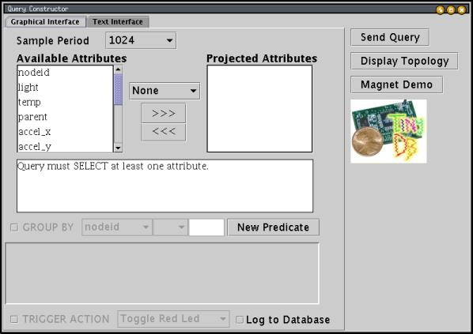
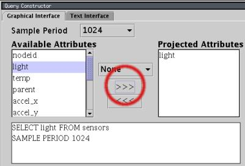
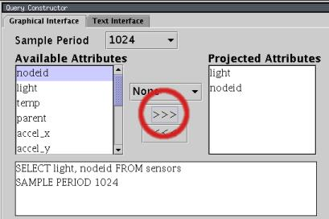
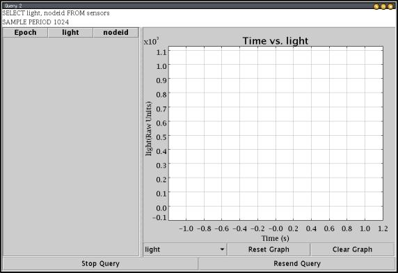
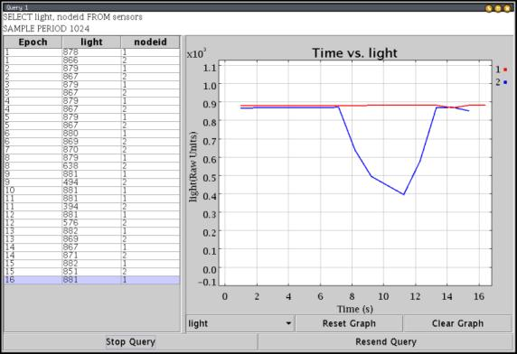
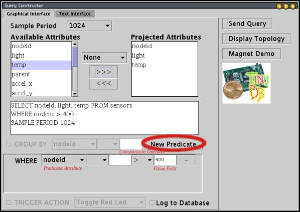
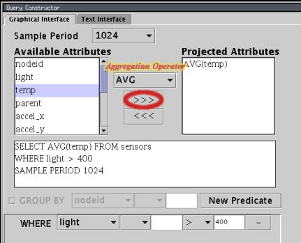

|
TinyDB A Declarative Query System for Motes Last updated 03 Sep. 2002 |
To use TinyDB, you install its TinyOS components onto each mote in your sensor network. TinyDB provides a simple Java API for writing PC applications that query and extract data from the network; it also comes with a simple graphical query-builder and result display that uses the API.
The primary goal of TinyDB is to make your life as a programmer significantly easier, and allow data-driven applications to be developed and deployed much more quickly than what is currently possible. TinyDB frees you from the burden of writing low-level code for sensor devices, including the (very tricky) sensor network interfaces.
TinyDBApp application, setting their id's to 0, 1, and 2. Turn on all three and connect the mote you programmed with id 0 to the PC serial port.
You will interact with these motes using the TinyDBMain class in
tools/java/net/tinyos/tinydb. First, you need to build the
java classes -- to do this, you need to insure that several packages are in your CLASSPATH. The packages you need are JLex.jar, cup.jar, and plot.jar; all three are available in
tools/java/jars. You'll need to set your CLASSPATH
variable in your shell -- under bash, this would look like:
Under
export CLASSPATH=$CLASSPATH:/path/to/tinyos/tools/java/jars/plot.jar:\ /path/to/tinyos/tools/java/jars/JLex.jar:\ /path/to/tinyos/tools/java/jars/cup.jar
sh or csh you would write "setenv CLASSPATH $CLASSPATH:..." instead of "export CLASSPATH=$CLASSPATH:...".
Now, build the java classes by typing make in the tools/java/net/tinyos/tinydb directory. This may take several minutes and will output lots of text as the TinyDB query parser is compiled.
Finally, you're ready to start up the GUI! Type java net.tinyos.tinydb.TinyDBMain from the tools/java directory. The TinyDB GUI should appear:

To specify a query in this GUI, you move the fields you want to extract from the sensors from the list of available attributes on the left to the list of projected attributes on the right. Let's add the light attribute: first, click on "light" in the left column, then click the ">>>" button. You display should now look like:

Notice that the text of the query below the attribute list updates as
you modify the query. The SAMPLE PERIOD clause in the query
specifies that a new light reading will be delivered once every 1024 milliseconds.
You can change the sample period using the pop-up menu at the top of
the window.
Now let's add the nodeid attribute: click on "nodeid" in the left column, and then click the ">>>" button again. Your display should now look like:

Unlike light, nodeid does not specify a
physical sensor reading, but instead is the id that was programmed into the
mote using the make mica install.nodeid command. You'll learn
later how to extend TinyDB with other attributes of your own creation.
Now, we're ready to run a query. Click the "Send Query" button; a result
window will appear:

As this window appears, the red LED on mote id 0 (the basestation) should blink a few times, and shortly thereafter the red LEDS on motes 1 and 2 should turn on. After a few seconds, the yellow LEDS on all three motes should blink about once a second -- this indicates the query is running properly. If the LEDs don't start blinking in a few seconds, try clicking "Resend Query" to reissue the query.
Results should now be streaming into the GUI, showing the light reading at motes 1 and 2. Try covering mote 2; you should see the line representing its value on the graph fall off:

That's it for this simple introduction to TinyDB. In the next section, we will discuss the more sophisticated features of TinyDB that make it useful in a broad range of data collection applications.
The WHERE clause :
TinyDB queries can contain a WHERE clause that filters out particular readings that
are not of interest. For example, a query that finds the light and temperature readings and id's
of all motes whose light reading is
above 400 would look like:
To create such a query, use the "New Predicate" button to add a predicate, select "light" from the predicate attribute menu, select ">" from the menu of comparative operators, and type 400 into the value field:

Note that you can use a WHERE clause over nodeid to send queries
to only a subset of the network.
Aggregation Predicates : TinyDB also allows you to compute aggregates over readings being reported by several nodes in a query. For example, to compute the average temperature reading of all the sensors where the light is above 400, you would issue the query:
To specify this query, select "AVG" in the aggregation operator menu before moving temp into the projected attributes list:

TinyDB computes this query via an efficient in-network approach, where sensors aggregate their own readings with readings from their neighbors and forward those aggregate values towards to basestation.
You've now seen how to pose a simple query with filtration and aggregation predicates. In the next section, you'll learn how to extend TinyDB with new attributes that can be queried via the same standardized interface.